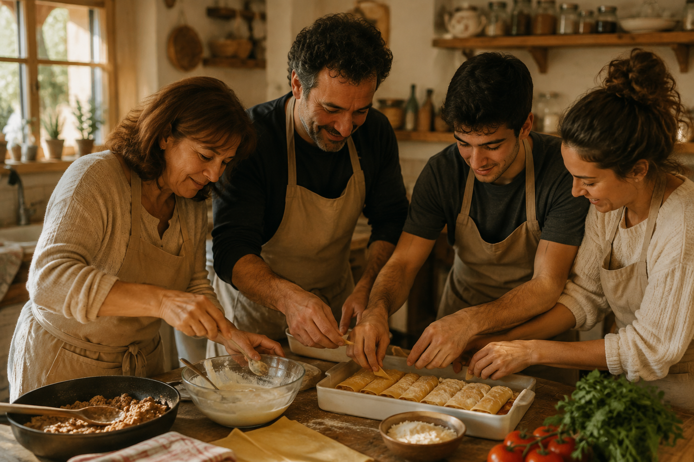

Sobre nosaltres
Som una família que ha convertit els canelons de carn en el nostre plat estrella. A través d’aquesta recepta tradicional volem transmetre la passió per la cuina casolana i inspirar altres famílies a mantenir viva la seva pròpia tradició.
- Fundadora: Sra. Consorcio
- Xef: Oncle Pablo
- Assistents de cuina: Els germans del xef:Pol i Mireia
